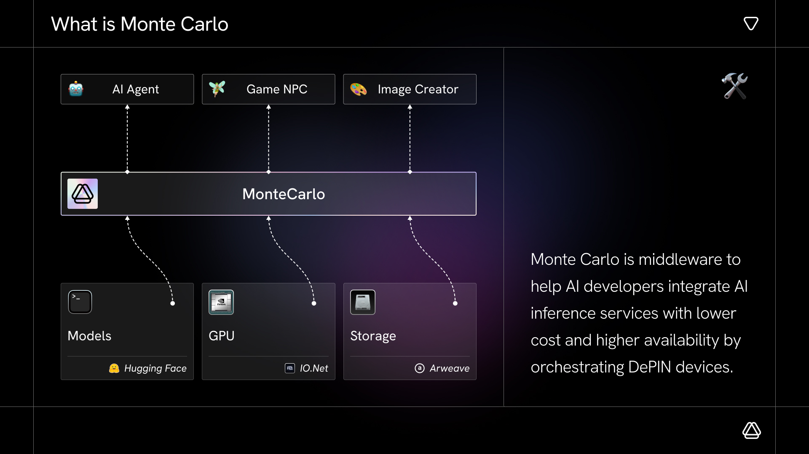
Montecarlo / Specialized AI Agent Prototype
Designing Montecarlo as a specialized AI agent Designing Montecarlo as a specialized AI agent
Montecarlo was an innovation hackathon project exploring how a general-purpose LLM could be packaged into a professional specialized agent. I designed the interaction prototype and UI prototype, helping the team turn the idea into a demo-ready product story.
01 - Project Introduction
Montecarlo connects AI developers to lower-cost, more reliable inference on DePIN.
Project Introduction
Middleware for accessible AI inference services.
Montecarlo is middleware that helps AI developers integrate AI inference services with lower cost and higher availability by orchestrating DePIN devices. It turns distributed GPU resources, model access, API gateways, smart contracts, coordinators, validators, and aggregators into a service layer for AI applications.
The deck frames the opportunity around three core needs: reducing the high cost of AI services, improving the reliability of DePIN hardware, and giving developers the simplest possible access. Montecarlo answers with pay-as-you-go inference, single inference requests that are 90% cheaper than OpenAI, 99.99% uptime, scale-out in seconds, and access to 600k+ AI models with one line of code.
About Monte Carlo
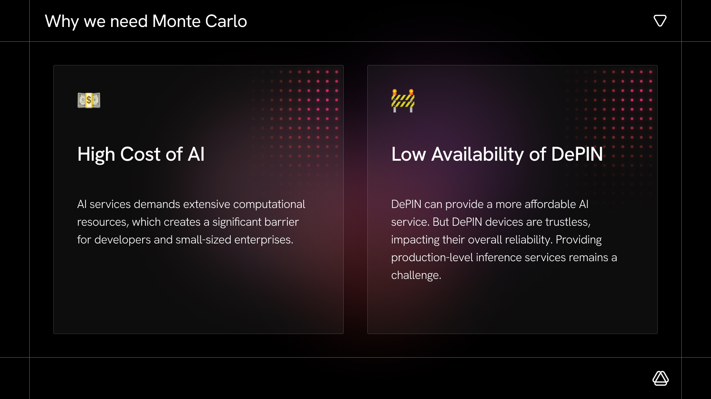
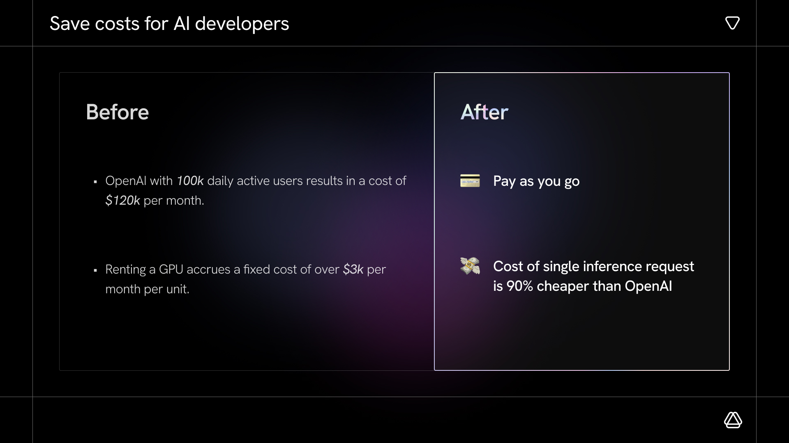
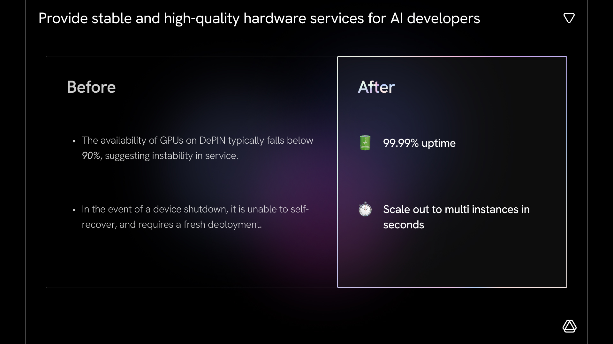
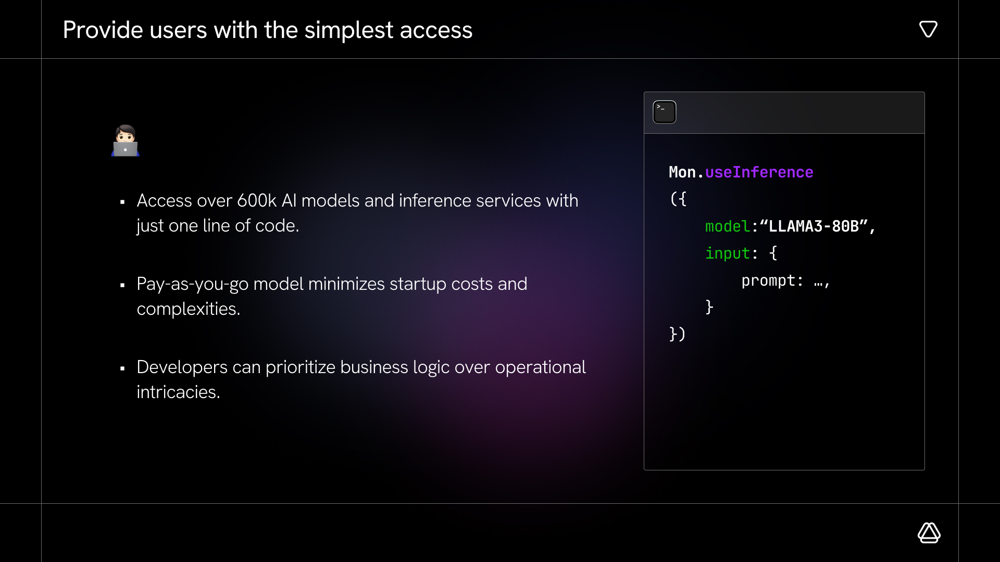
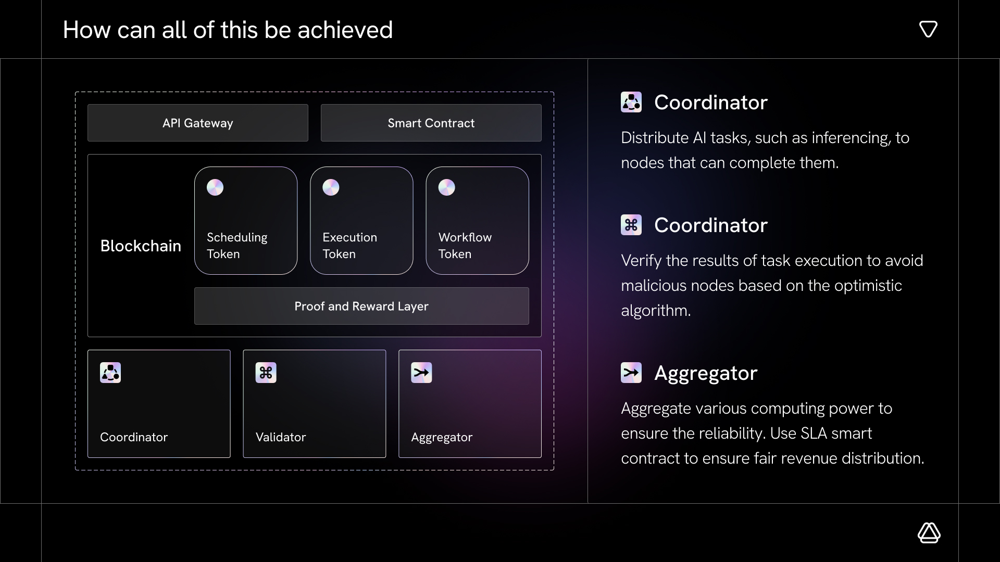
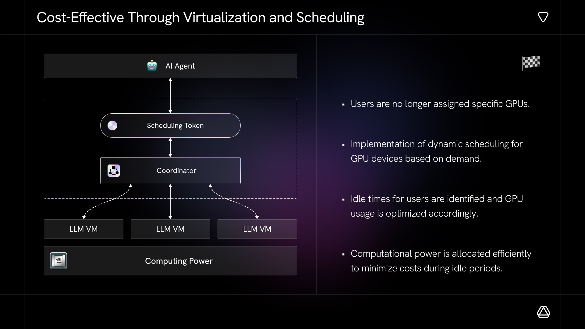
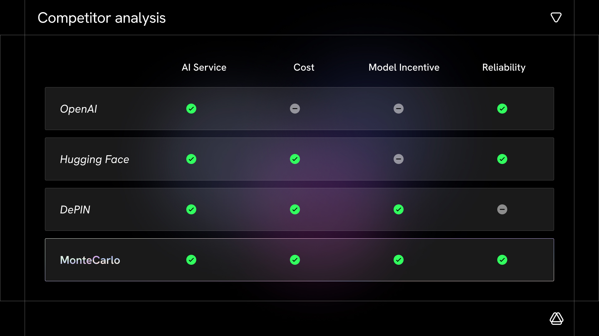
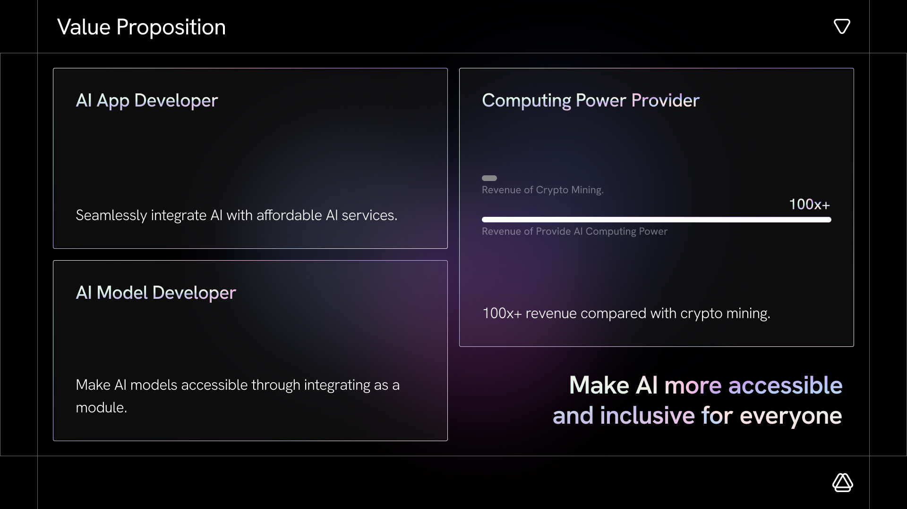
02 - My Responsibility
I worked as the external product designer for the interaction and UI prototype.
Product Translation
My responsibility was to translate Montecarlo's AI inference middleware story into a product experience that could be understood during an innovation hackathon demo. I focused on the moments where a technical infrastructure idea needed to become visible, usable, and presentation-ready.
Prototype Design
I designed the interaction prototype and UI prototype, including the prompt-to-result flow, response structure, key interface states, and demo rhythm. The goal was to show how general LLM capability could be packaged into a specialized agent experience without relying on a long verbal explanation.
Visual System
Although this was a hackathon demo project, I still designed Montecarlo's complete brand visual system and unified visual language. The logo uses the complex geometric forms favored in AI products, while rectangular chip-like linework and flickering light spots that suggest large-model reasoning are woven into the visual direction.
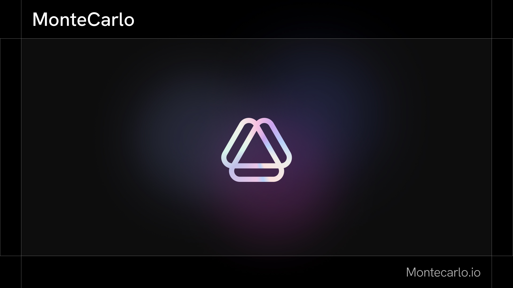
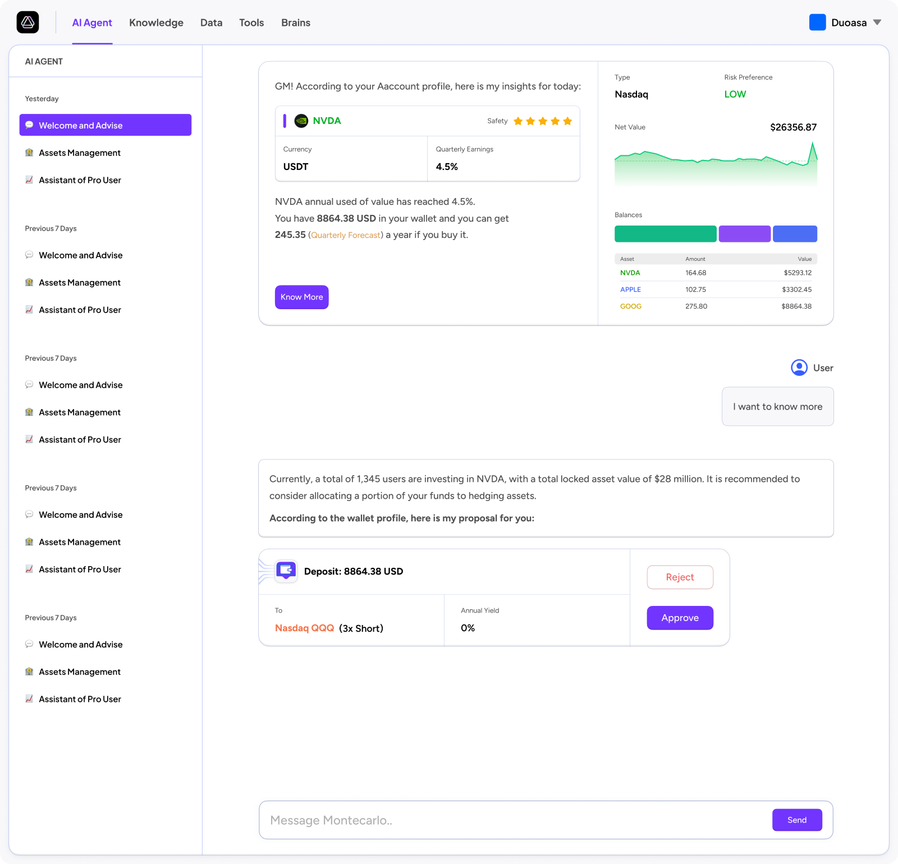
03 - Outcome & Reflection
The project captured an early moment in professional AI agent exploration.
Montecarlo was built before AI agents became a mature product category. The project tested how a general LLM could be packaged into a professional specialized agent, and the prototype helped the team present the idea clearly enough to win recognition during the hackathon.
AI products need visible reasoning
For a specialized agent, the answer alone was not enough. The prototype needed to show how the system moved from prompt to analysis to recommendation.
Hackathon demos need compressed product clarity
The interface had to communicate product value quickly: lower AI service cost, better availability, simple access, and a clear user flow.
Agent packaging turns capability into product
The project showed how a general model becomes more useful when wrapped with domain context, interaction structure, and task-specific UI.
Next project
ABEx
Brand VI / Product UI